GIỚI THIỆU CHỨC NĂNG
(Tạo tờ khai tự động bằng ECUS.AI)
1. Giới thiệu chức năng
Trong bối cảnh trí tuệ nhân tạo đang được ứng dụng mạnh mẽ trong nhiều lĩnh vực, hoạt động xuất nhập khẩu cũng đang bước vào giai đoạn chuyển đổi số sâu rộng. Doanh nghiệp không chỉ cần xử lý nhanh các bộ hồ sơ hải quan phức tạp mà còn phải đáp ứng yêu cầu số hóa chứng từ và khai báo điện tử theo quy định mới tại Thông tư 121/2025/TT-BTC ban hành ngày 18/12/2025.
Hiện nay, khi có bộ chứng từ hồ sơ Hải quan, người khai đang phải tự đọc thông tin bộ hồ sơ một cách thủ công và nhập tay từng chỉ tiêu thông tin vào phần mềm. Tiêu tốn nhiều thời gian, công sức và dễ xảy ra sai sót.
Giờ đây, với sự hỗ trợ của chức năng tạo tờ khai tự động ECUS.AI, doanh nghiệp có thể thực hiện phân tích các tiêu chí trên chứng từ hoàn toàn tự động, đáp ứng chỉ tiêu thông tin để tạo tờ khai Hải quan. Quá trình thực hiện đơn giản – nhanh chóng – độ tin cậy cao.
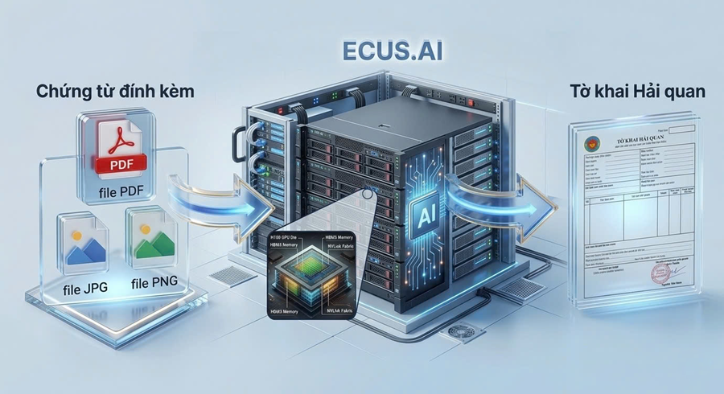
Hệ thống ECUS.AI sử dụng khả năng xử lý của Ndivia H200 GPU và các model AI tiên tiến. Quá trình đọc và phân tích các file chứng từ diễn ra nhanh chóng, từ đó tạo dữ liệu cho tờ khai hải quan hoàn toàn tự động và có độ tin cậy cao.
Quy trình thực hiện đơn giản, chỉ với 3 bước:
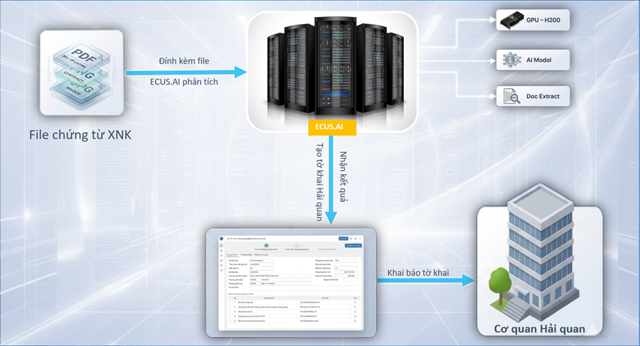

Bước 1 – Người khai đính kèm các file chứng từ của bộ hồ sơ
Tại giao diện chức năng, người khai lần lượt đính kèm các file chứng từ đang có của bộ hồ sơ như: Hóa đơn, vận đơn, hợp đồng, C/O…với lưu ý định dạng file chứng từ phải là PDF, PNG hoặc JPG.
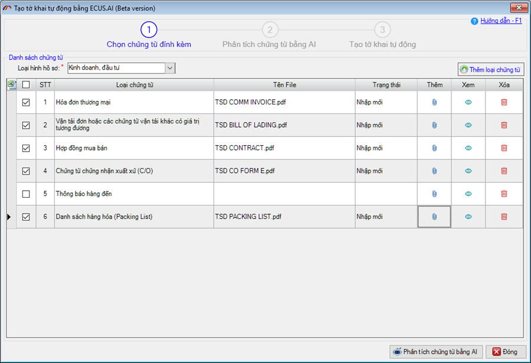
Bước 2 - ECUS.AI tiến hành phân tích chứng từ tự động.
ECUS.AI với sức mạnh của Nvidia GPU H200, AI Model tiên tiến và công nghệ Doc Extract sẽ thực hiện phân tích chứng từ hoàn toàn tự động:
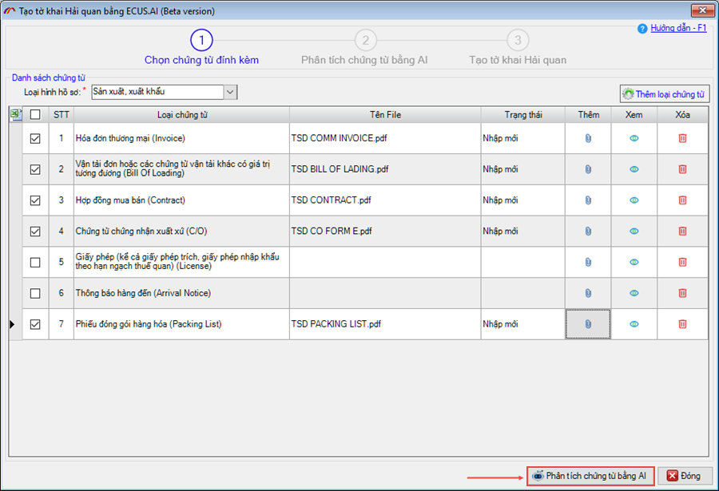
Quá trình phân tích hoàn toàn tự động, nhanh chóng và chính xác:
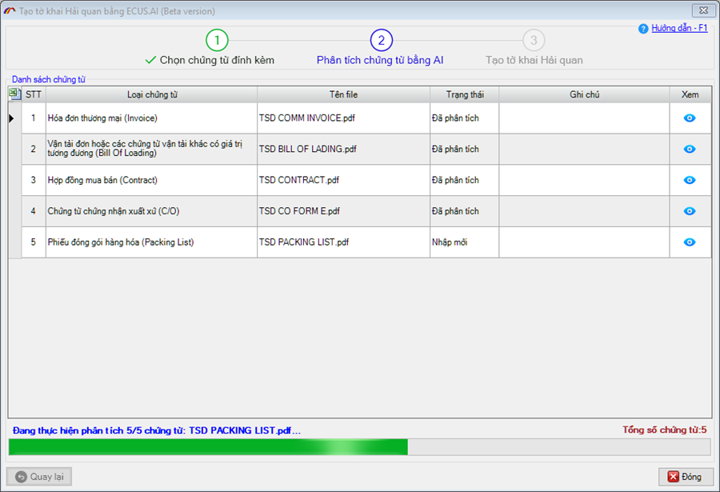
Bước 3 – Kiểm tra kết quả phân tích và tạo tờ khai tự động.
Sau khi phân tích thành công, hệ thống sẽ hiển thị kết quả phân tích để người khai kiểm tra và tạo tờ khai tự động:
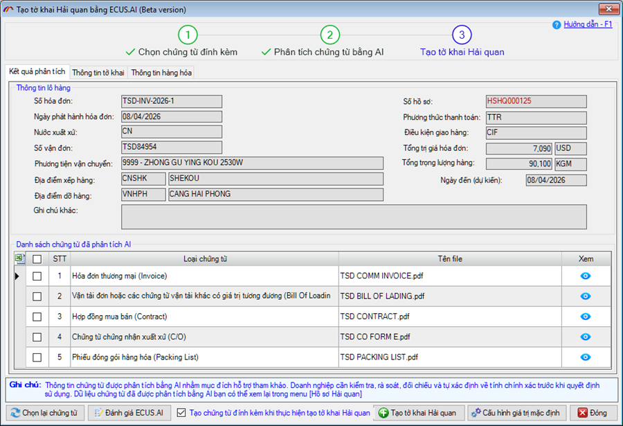
Thông tin hàng hóa được ECUS.AI tự động xác định mã số HS, dịch tự động tên hàng sang Tiếng Việt và các thông tin về xuất xứ, số lượng, đơn vị tính, đơn giá, trị giá của hàng hóa.
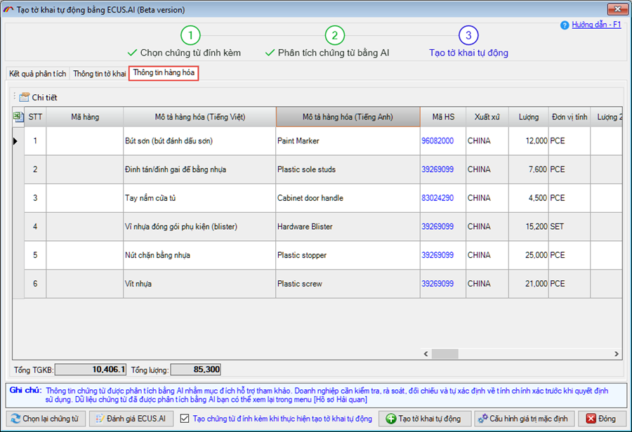
Sau khi tạo tờ khai tự động thành công, hệ thống sẽ đưa các kết quả phân tích vào chỉ tiêu thông tin tương ứng trên tờ khai, người khai kiểm tra, xác nhận các tiêu chí thông tin và tiến hành khai báo lên cơ quan Hải quan.
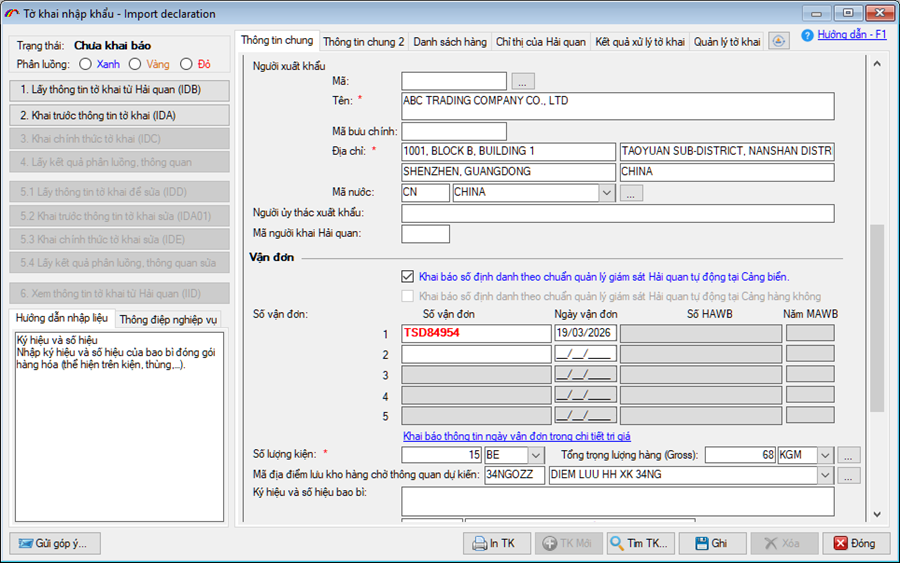
Hệ thống cũng sẽ tạo các chứng từ đính kèm khi tạo tờ khai tự động:
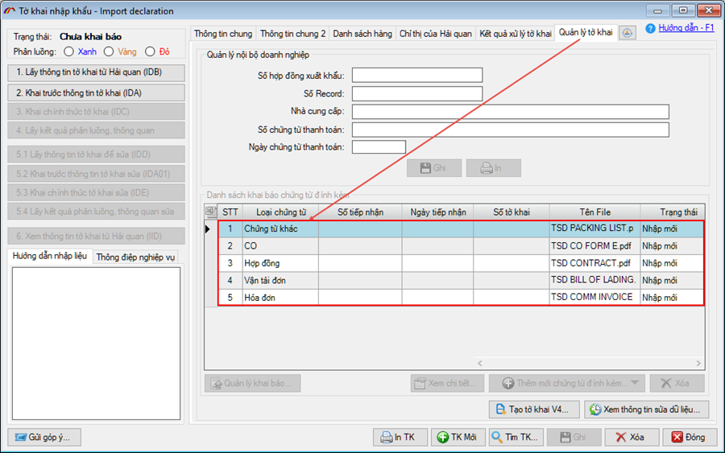
Sau khi tờ khai được khai báo, người khai có thể khai các chứng từ đính kèm này ngay mà không cần phải nhập dữ liệu.
2. Một số tính năng nổi bật của ECUS.AI.
Ngoài việc hỗ trợ tự động phân tích chứng từ nhanh chóng, chính xác, hệ thống ECUS.AI còn có các tính năng nổi bật sau.
a) Kiểm tra chi tiết kết quả phân tích chứng từ
Người khai có thể kiểm tra chi tiết kết quả phân tích, đối chiếu từng chỉ tiêu thông tin với chứng từ gốc một cách trực quan
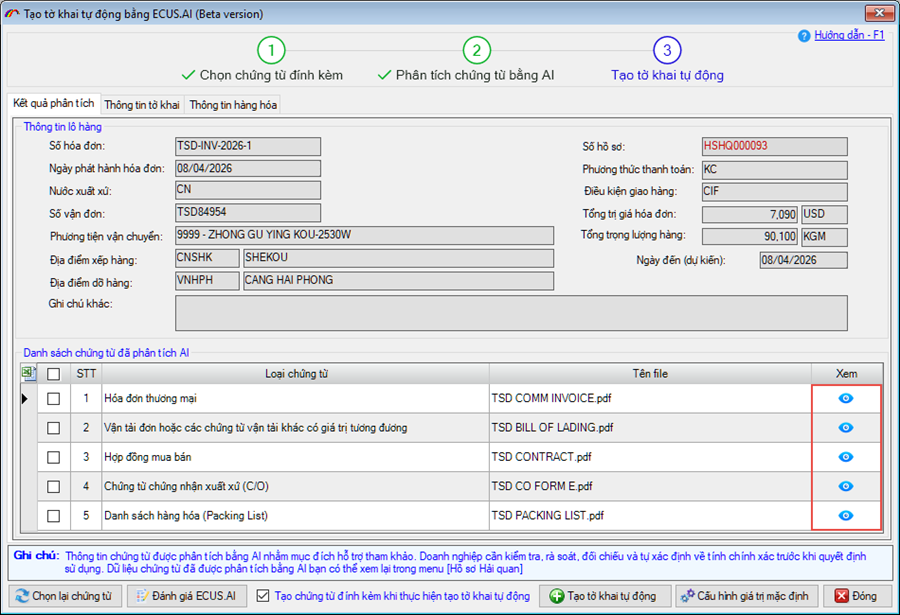
Màn hình kiểm tra chi tiết bao gồm cửa sổ hiển thị chứng từ gốc và cửa số hiện thị kết quả, rất trực quan để người dùng kiểm tra, đối chiếu:
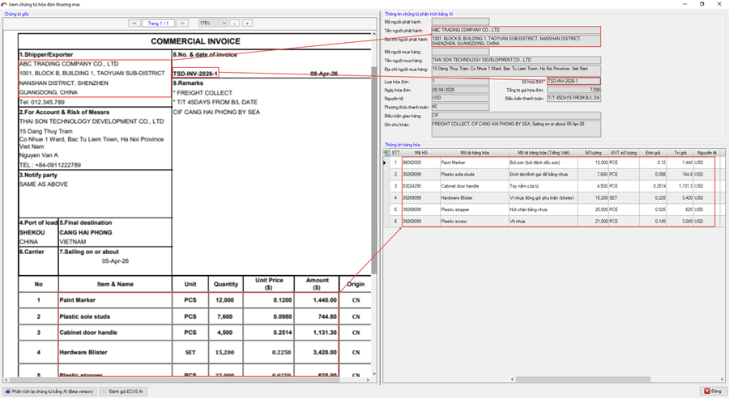
b) Danh sách HS gợi ý.
Ngoài việc xác định mã số HS hàng hóa, hệ thống còn hỗ trợ gợi ý danh sách các mã HS có độ tin cậy cao để người khai tham khảo và quyết định lựa chọn sử dụng
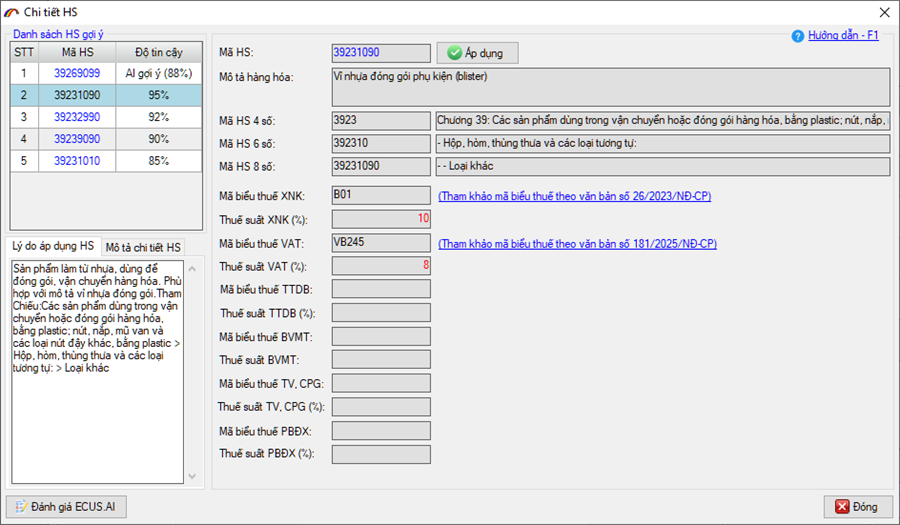
c) Quản lý hồ sơ cả trước và sau thông quan
Hệ thống cho phép quản lý hồ sơ xuất khẩu, nhập khẩu cả trước và sau Thông quan

Các tờ khai được tạo từ bộ hồ sơ cũng sẽ được liệt kê chi tiết để người dùng tiện theo dõi.
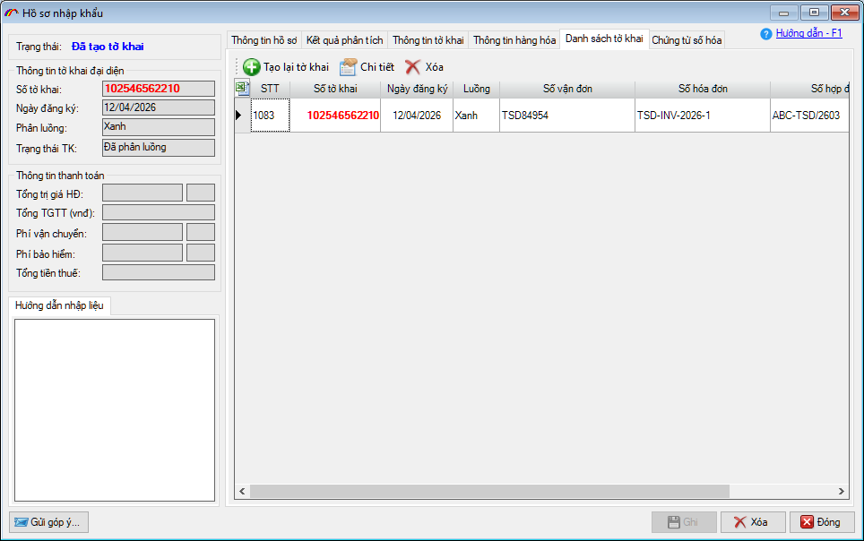
d) Dịch vụ hỗ trợ khách hàng chuyên nghiệp.
Khi doanh nghiệp sử dụng ECUS.AI, Công ty Thái Sơn sẽ có đội ngũ chuyên nghiệp luôn đồng hành hỗ trợ và tư vấn mô hình áp dụng phù hợp với từng doanh nghiệp.
Doanh nghiệp tham khảo video giới thiệu chức năng tạo tờ khai tự động bằng ECUS.AI:
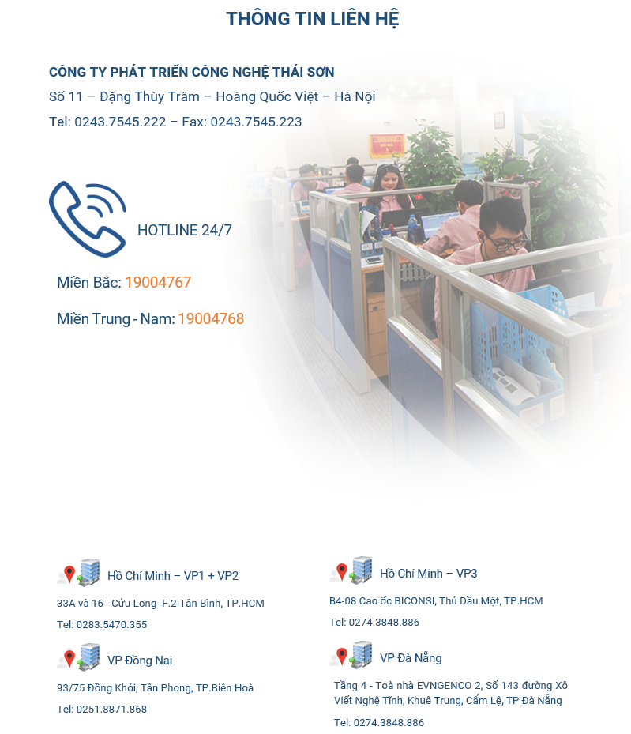
Bản quyền © thuộc về Công ty TNHH Phát triển công nghệ Thái Sơn